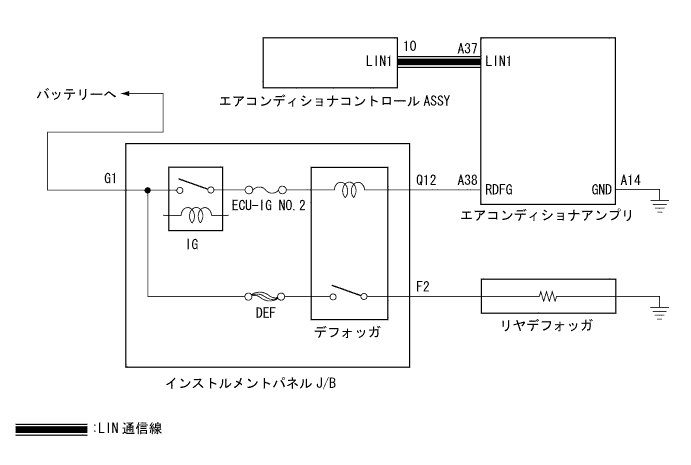
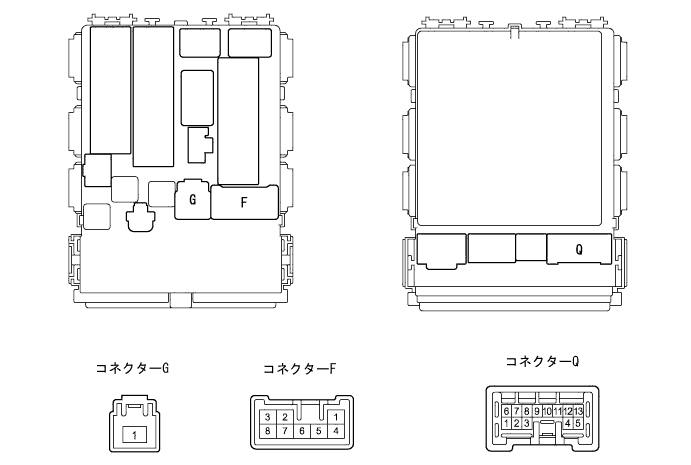
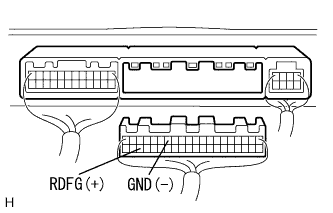
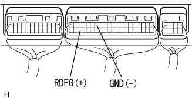

Rear Window Defogger System Rear Window Defogger does not Operate |

| Step 1 | Perform TaSCAN Active Test (Defogger Relay) |
Using SST (TaSCAN), follow the prompts on the screen to display the "Active Test" screen, and turn the "Rear Defogger Relay" ON.
| Item | Test Details |
|---|---|
| Rear Defogger Relay | Rear defogger relay ON ←→ OFF |
Check the operation of the rear window defogger.
| Result | Proceed to |
|---|---|
| Rear window defogger does not warm up | A |
| Rear window defogger warms up | B |
|
| ||||
| A | |
| Step 2 | Inspect Fuse (ECU-IG No.2, DEF) |
Using SST (Toyota electrical tester), measure the resistance of the ECU-IG No.2 fuse and DEF fuse.
| Tester Connection | Condition | Standard |
|---|---|---|
| ECU-IG No.2 | Always | Below 1 Ω |
| DEF | Always | Below 1 Ω |
|
| ||||
| OK | |
| Step 3 | Inspect Instrument Panel Junction Block Assembly (Defogger Relay) |

Disconnect connectors F, G and Q of the instrument panel junction block assembly.
Using SST (Toyota electrical tester), measure the resistance between the terminals of the connector.
| Tester Connection | Condition | Standard |
|---|---|---|
| F2 - G1 | IG OFF, rear defogger switch OFF | 10k Ω or higher |
| G1 - Q12 | IG ON | Below 1 Ω |
Connect each connector of the instrument panel junction block assembly.
Using SST (Toyota electrical tester), measure the resistance between the terminals of the connector.
| Tester Connection | Condition | Standard |
|---|---|---|
| F2 - G1 | IG ON, rear defogger switch ON | Below 1 Ω |
|
| ||||
| OK | |
| Step 4 | Inspect Wire Harness and Connector (Power Source - Air Conditioner Amplifier Assembly) |
for reference.Disconnect connector A of the air conditioner amplifier assembly.
 |
Using SST (Toyota electrical tester), measure the voltage between the terminals of the air conditioner amplifier assembly vehicle side wire harness connector. (For Terminals of ECU, see)
| Inspection Terminal (Terminal Symbol) | Condition | Standard |
|---|---|---|
| A38(RDFG) - A14(GND) | IG ON | 11 to 14 V |
|
| ||||
| OK | |
| Step 5 | Inspect Air Conditioner Amplifier Assembly (RDFG Terminal) |
Connect connector A of the air conditioner amplifier assembly.
Turn IG ON.
 |
Using SST (Toyota electrical tester), measure the voltage between the terminals of the air conditioner amplifier assembly connector. (For Terminals of ECU, see)
| Inspection Terminal (Terminal Symbol) | Condition | Standard |
|---|---|---|
| A38(RDFG) - A14(GND) | READY ON, rear defogger switch OFF → ON | 11 to 14 V → 1V or less |
|
| ||||
| OK | |
| Step 6 | Inspect Back Door Glass (Rear Defogger Section) |
Using SST (Toyota electrical tester), measure the resistance between the terminals of the rear defogger.
| Tester Connection | Condition | Standard |
|---|---|---|
| 1 - Body ground | Always | Below 1 Ω |
|
| ||||
| OK | |
| Step 7 | Repair or Replace Wire Harness or Connector (Back Door Glass (Rear Defogger Section) - Body Ground) |
Repair or replace the wire harness of the back door glass (rear defogger section).
| Result | Proceed to |
|---|---|
| Does not operate normally after repair | A |
| Operates normally after repair | B |
|
| ||||
| A | |
| Step 8 | Replace Air Conditioner Amplifier Assembly |
Replace the air conditioner amplifier assembly with a new or known good one, and check that it operates normally.
| Result | Proceed to |
|---|---|
| Does not operate normally | A |
| Operates normally | B |
|
| ||||
| A | ||
| ||